Internet
Das Internet, umgangssprachlich auch Netz, ist ein weltweiter Verbund von Rechnernetzwerken, den autonomen Systemen. Es ermöglicht die Nutzung von Internetdiensten wie WWW, E-Mail, Telnet, SSH, XMPP, MQTT und FTP. Dabei kann sich jeder Rechner mit jedem anderen Rechner verbinden. Der Datenaustausch zwischen den über das Internet verbundenen Rechnern erfolgt über die technisch normierten Internetprotokolle. Die Technik des Internets wird durch die RFCs der Internet Engineering Task Force (IETF) beschrieben.
Die Verbreitung des Internets hat zu umfassenden Umwälzungen in vielen Lebensbereichen geführt. Es trug zu einem Modernisierungsschub in vielen Wirtschaftsbereichen sowie zur Entstehung neuer Wirtschaftszweige bei und hat zu einem grundlegenden Wandel des Kommunikationsverhaltens und der Mediennutzung im beruflichen und privaten Bereich geführt. Die kulturelle Bedeutung dieser Entwicklung wird manchmal mit der Erfindung des Buchdrucks gleichgesetzt.
Die Übertragung von Daten im Internet unabhängig von ihrem Inhalt, dem Absender und dem Empfänger wird als Netzneutralität bezeichnet.
Entwicklungsumgebung
 |
Das erste, was man für eine Entwicklungsumgebung braucht, ist ein Programm, mit dem man die Webseite schreiben kann, z.B. MS Visual Studio Code. |
| Dazu benötigt man einen Browser um die Webseite betrachten zu können. Ich empfehle Google Chrome. | |
| Bevor man die Webseite im Browser sehen kann, muss man den Zugriff zuerst über einen Webserver ermöglichen, z.B. XAMPP. | |
| Egal wie lange man schon Webseiten schreibt und wie viele Elemente und CSS-Regeln man kennt, alles kann man niemals wissen. Deshalb gibt es Seiten wie w3schools und selfhtml. | |
 |
Mit den Developer-Tools kann man gleich im Browser den Code der Webseite untersuchen und auch Änderungen ausprobieren, ohne dass am echten Code was verändert wird. Man öffnet die Developer-Tools mit F12. |
HTML
HTML beschreibt die Struktur von Seiten
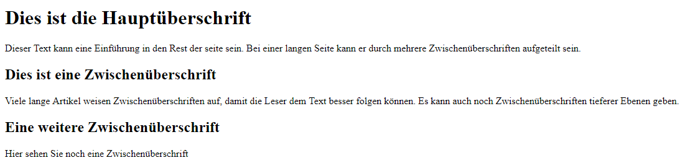Im Folgenden sehen Sie den HTML-Code für das Bild. Machen Sie sich jetzt noch keine Gedanken über diesen Code. Was er im Einzelnen bedeutet, sehen wir uns auf später noch ausführlich an. Der HTML-Code ist hier blau dargestellt, und der Text, der auf der Seite erscheinen soll, schwarz.
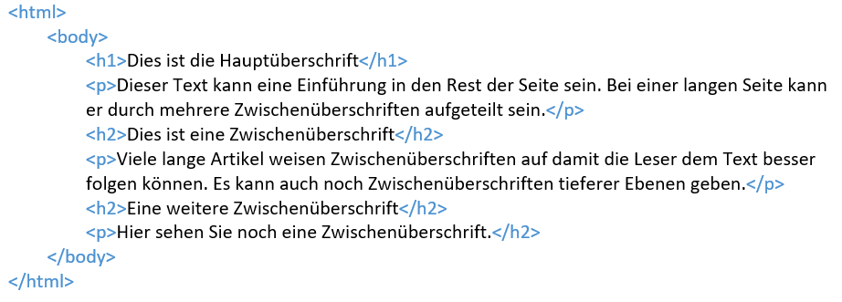Elemente
HTML verwendet Elemente zur Beschreibung der Seitenstruktur
Elemente sind wie Behälter. Sie teilen Ihnen etwas über die Informationen zwischen ihrem öffnenden und schliessenden Tag mit.
Tags unter der Lupe
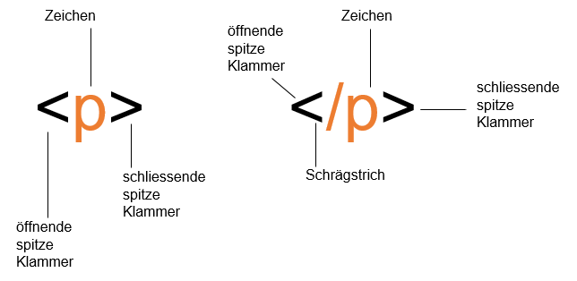Das Zeichen zwischen den Klammern gibt den Zweck des Tags an.
Beispielsweise steht das p im obigen Beispiel für "paragraph", also Absatz.
Beim schliessenden Tag steht ein Schrägstrich hinter dem <
Die Begriffe "Tag" und "Element" werden oft synonym verwendet.
Streng genommen besteht ein Element jedoch aus einem öffnenden und einem schliessenden Tag und dem, was dazwischensteht.
Text
Überschriften
| <h1> <h1> <h2> <h3> <h5> <h6> |
HTML hat offiziell 6 Ebenen für Überschriften: h1 ist für Hauptüberschriften da. h1 wird für Zwischenüberschriften verwendet. Wenn es Abschnitte unterhalb einer Zwischenüberschrift gibt, wird das Element h2 verwendet usw. |
Absätze
| <p> | Um einen Absatz zu erstellen umgeben Sie die Worte, die ihn ausmachen, mit einem öffnenden <p>- und einem schliessenden</p>-Tag. Standardmässig zeigt ein Browser den Absatzanfang in einer neuen Zeile an und lässt etwas Platz zu den nachfolgenden Absätzen. |
Fett & Kursiv
|
<b> <i> |
Wenn Sie Wörter mit den Tags <b> und </b> umgeben, erscheinen sie in
Fettschrift. Wenn Sie Wörter mit den Tags <i> und </i> umgeben, erscheinen sie in Kursivschrift. |
Weissraum
Um den Code leichter lesbar zu machen, fügen die Autoren von Webseiten gern zusätzliche Leerzeichen oder Leerzeilen ein.
Stösst ein Browser auf mehrere Leerzeichen nebeneinander, zeigt er nur eines davon an. Auch mehrere aufeinanderfolgende Zeilenumbrüche behandelt er wie einen einzigen. Das wird als Weissraumreduzierung bezeichnet.
Zeilenumbrüche
| <br /> | Wenn Sie jedoch mitten in einem Absatz einen Umbruch wünschen, können Sie das Tag <br /> verwenden. |
Besonderes Markup
DOCTYPE
| <!DOCTYPE html> | Da es verschieden Versionen von HTML gibt, sollte eine Webseite mit einer Dokumentdeklaration (DOCTYPE) beginnen, die dem Browser mitteilt, welche dieser Versionen verwendet wird |
Kommentare in HTML
| <!-- --> | Wenn Sie in Ihren Code Kommentare einfügen möchten, die im Browser nicht sichtbar sein
sollen,
stellen Sie den Text zwischen folgende Zeichen: <!-- Hier kommentieren --> |
Das Attribut id
| <p id=" "> | Jedes HTML-Element kann das Attribut id aufweisen, mit dem das Element von allen anderen Elementen auf der Seite unterschieden wird. Der Wert dieses Attributs muss mit einem Buchstaben oder Unterstrich beginnen (nicht mit einer Zahl oder einem anderen Zeichen). |
Das Attribut Class
| <p class=" "> | Alle HTML-Elemente können auch das Attribut class aufweisen. Anstatt ein einzelnes Element in Dokument eindeutig zu bezeichnen, ist es manchmal notwendig, mehrere Elemente zu markieren, die sich auf die gleiche Weise von den anderen Elementen auf der Seite abheben sollen. |
Listen
Geordnete Listen
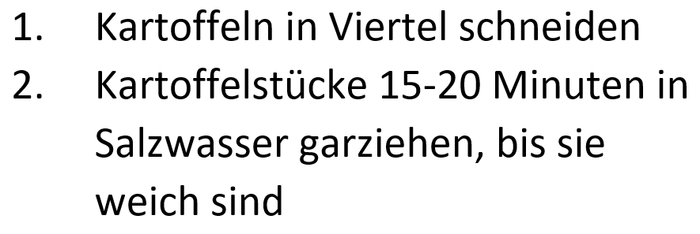| <ol> | <Geordnete Listen werden mit dem Element <ol> erstellt. |
| <li> | Jeder Eintrag in der Liste wird zwischen das öffnende Tag <li> und das schliessende </li> gestellt. (li steht für "Listeneintrag.") |
Ungeordnete Listen
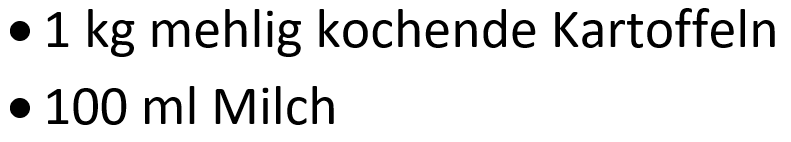| <ul> | Ungeordnete Listen werden mit dem Element <ul> erstellt. |
| <li> | Jeder Eintrag in der Liste wird zwischen das öffnende Tag <li> und das schliessende </li> gestellt. (li steht für "Listeneintrag.") |
Definitionslisten
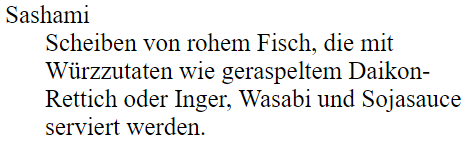| <dl> | Definitionslisten werden mit dem Element <dl> erstellt und bestehen gewöhnlich aus einer Abfolge von Begriffen mit den zugehörigen Definitionen. |
| <dt> | In diesem Element ist der zu definierende Begriff enthalten (der Definitionsterm). |
| <dd> | Hierin ist die Definition enthalten. |
Verschachtelte Listen
| 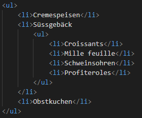 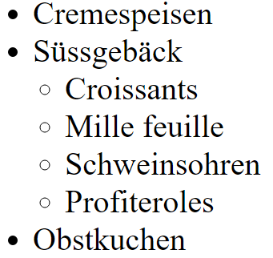 | Innerhalb eines <li>- Elements können Sie auch eine zweite Liste einfügen, um eine untergeordnete oder verschachtelte Liste zu bilden. |
Formulare
Wenn Sie Informationen von den Besuchern Ihrer Webseite einholen wollen, benötigen Sie ein Formular, das Sie mit dem Element <form> erstellen.
Die in einem Formular erfassten Informationen werden als Name/Wert-Paare gesendet.
Jedes Formularsteuerelement erhält einen Namen. Der Text, den die Benutzer eingeben, und die Werte der Optionen, die sie auswählen, werden an den Server gesendet.
In HTML5 wurden neue Formularelemente eingeführt, die das Ausfüllen von Formularen erleichtern.
Flash, Video & Audio
Seit den späten 1990er Jahren ist Flash eine gebräuchliche Methode geworden, um Animationen zu erstellen. Später wurde es auch eingesetzt, um Video- und Audioinhalte auf Websites abzuspielen.
Es gibt mehrere Gründe dafür, dass Flash nicht mehr so häufig auf Websites verwendet wird:
In den Jahren 2005 und 2006 wurden einige JavaScript-Bibliotheken veröffentlicht, die es einfacher machen, animierte Effekte mit JavaScript zu erstellen.
Als Apple 2007 das iPhone herausbrachte und 2010 das iPad, wurde entschieden, Flash auf diesen Plattformen nicht zu unterstützen. Kurze Zeit später stoppte Adobe die Entwicklung des Flash-Plugins für mobile Geräte.
Ausserdem wurden gesetzliche Regelungen verabschiedet, nach denen Websites auch für Menschen mit Seh- oder sonstigen körperlichen Behinderungen zugänglich sein müssen. Infolgedessen wurde Flash kritisiert, da Flash-Inhalte nicht immer den Anforderungen an die Barrierefreiheit genügen.
HTML5: Videos zu ihren Seiten hinzufügen
| <video> | Das Element <video> verfügt über eine Reihe von Attributen um die Wiedergabe zu steuern: |
| src | Dieses Attribut gibt den Pfad der Videodatei an. |
| poster | Mit diesem Attribut können Sie ein Bild angeben, das angezeigt wird, während das Video heruntergeladen wird oder bis der Benutzer das Video abspielt. |
| width, heigth | Diese Attribute geben die Grösse des Players in Pixeln an. |
| controls | Wird dieses Attributangegeben, stellt der Browser seine eigenen Steuerelemente für die Wiedergabe bereit. |
| autoplay | Wird dieses Attribut angegeben, beginnt die Wiedergabe automatisch |
| loop | Wird dieses Attribut angegeben, beginnt die Wiedergabe nach dem Ende des Films erneut. |
| preload | Dieses Attribut weist den Browser an, was er beim Laden der Seite tun soll. Es kann folgende drei Werte annehmen: |
| none | Der Browser soll das Video erst laden, wenn der Benutzer auf die Wiedergabeschaltfläche klickt. |
| auto | Der Browser lädt das Video zusammen mit der Seite herunter. |
| metadata | Der Browser erfasst nur Informationen wie die Grösse, das erste Einzelbild, die Trackliste und die Dauer. |
HTML5: Audioinhalte zu Webseiten hinzufügen
| <audio> | Das Element <audio> weist eine Reihe von Attributen auf, mit denen Sie die Wiedergabe steuern können: |
| src | Dieses Attribut gibt den Pfad zur Audiodatei an. |
| controls | Dieses Attribut gibt an, ob der Player Steuerelemente anzeigen soll. Wenn Sie deses Attribut nicht verwenden, werden standardmässig keine Steuerelemente dargestellt. |
| autoplay | Ist dieses Attribut vorhanden, beginnt die Audiowiedergabe automatisch. |
| preload | Dieses Attribut sagt dem Browser, was er tun soll, wenn autoplay nicht eingerichtet ist. Dieses Attribut kann dieselben Werte annehmen wie diejenigen für das Element <video> |
| loop | Dieses Attribut gibt an, dass die Audiowiedergabe nach dem Ende wieder von vorn beginnen soll. |
Bilder
Bilder hinzufügen
| <img> | Um Bilder zu einer Seite hinzuzufügen, verwenden Sie das Element <img>. Dies ist gewöhnlich ein relativer URL, der auf ein Bild auf ihrer eigenen Website zeigt. |
| alt | Dieses Attribut bietet eine Beschreibung des Bildes in Textform für den Fall, dass das Bild nicht zu sehen sein sollte. Ausserdem ist es für Suchmaschinen leichter zu finden. |
| title | Sie können im Element <img> auch das Attribut title verwenden, um zusätzliche Informationen über das Bild anzugeben. Die meisten Browser zeigen den Inhalt dieses Attributs in einem kleinen Informationsfeld an, wenn der Benutzer mit dem Mauszeiger über das Bild fährt. |
Höhe und Breite von Bildern
Häufig werden in <img>-Elementen noch zwei weitere Attribute verwendet, die die Grösse angeben:
| height | Gibt die Höhe des Bildes in Pixeln an. |
| width | Gibt die Breite des bildes in Pixeln an. |
Es dauert meistens länger, die Bilder zu laden, als den HTML-Code, der den Rest der Seite ausmacht. Daher ist es sinnvoll, die Bildgrösse anzugeben, sodass der Browser den Rest der Seite schon einmal darstellen und dabei ausreichend Platz für das Bild lassen kann, das noch geladen wird.
Drei Regeln zum Erstellen von Bildern
- Speichern Sie die Bilder im Richtigen Format
- Auf Websites werden hauptsächlich Bilder der Formate JPEG, GIF und PNG verwendet. Wenn Sie das falsche Format für ihr Bild wählen, kann es sein, dass es nicht so scharf angezeigt wie möglich und dass die Webseite langsamer geladen wird.
- Speichern Sie die Bilder in der richtigen Grösse
- Speichern Sie das Bild mit der Breite und Höhe, die es auf der Website einnehmen soll. Hat das Bild nicht die angegebene Breite oder Höhe, sondern ist kleiner, kann es gestreckt und verzerrt werden. Ist das Bild grösser als angegeben, dauert es länger, bis es auf der Seite angezeigt wird.
- Verwenden Sie die richtige Auflösung
- Computerbildschirme bestehen aus kleinen Bildpunkten (Pixeln). Die Auflösungs gibt an, wie viele Pildpunkte auf ein Zoll kommen. Auf den meisten Computerbildschirmen werden Webseiten nur mit 72 Pixeln pro Zoll angezeigt. Wenn Sie ein Bild mit einer höheren Auflösung speichern, wird es grösser als nötig und brauch längere Zeit zum Herunterladen.
Bildformate
| JPEG | Wenn ein Bild viele verschiedene Farben enthält, sollten Sie das Format JPEG verwenden. Fotos mit Schneelandschaften oder bewölktem Himmel wirken zwar so, als enthielten sie grosse Flächen aus Weiss oder grau, aber in Wirklichkeit besteht das Bild aus vielen verschiedenen Farben mit feinen unterschiedlichen Nuancen. |
| GIF/PNG | Wenn ein Bildbereich durchgängig mit genau derselben Farbe ausgefüllt ist, spricht man von "flachen Farben". Das ist häufig in Logos, Zeichnungen und Diagrammen der Fall. Fotos von Schnee, von Gras oder vom Himmel weisen jedoch keine flachen Farben auf, sondern viele verschiedene Nuancen einer Farbe, weshalb die Formate GIF und PNG dafür nicht so gut geeignet sind. |
Links
Links werden mit dem Element <a> erstellt. die Benutzer können auf alles klicken, was sich zwischen dem öffnenden <a>-Tag und dem schliessenden </a>-Tag befindet. Zu welcher Seite der Link führt, geben Sie im Attribut href an.
Links zu anderen Websites
Führt der Link zu einer anderen Website, muss der Wert von href die komplette Webadresse dieser Seite angeben. Dies ist ein sogenannter absoluter URL.
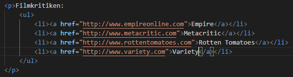 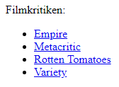Absolute URLS
URL steht für "Uniform Resource Locator" (also etwa "einheitlicher Ressourcenlokalisierer"). Jede Webseite verfügt über ihren eigenen URL. Dabei handelt es sich um die Webadresse, die Sie im Browser eingeben, wenn Sie diese Seite besuchen möchten.
Ein absoluter URL beginnt mit dem Domänennamen der Webseite. Darauf kann der Pfad zu einer einzelnen Seite folgen. Ist keine Seite angegeben, wird die Startseite der Website angezeigt.
Links zu anderen Seiten derselben Website
Bei einem Link zu anderen Seiten derselben Website müssen Sie den Domänennamen im URL nicht angeben, sondern können als Abkürzung einen relativen URL verwenden
Befinden sich alle Seiten der Webseite im selben Ordner, dann ist der Wert für das Attribut href einfach der Dateiname der Seite.
Sind die einzelnen Seiten der Website jedoch in verschiedenen Ordnern abgelegt, müssen Sie eine etwas komplizierte Syntax verwenden, um anzugeben, wo sich die Seite relativ zur aktuellen Seite befindet. Mehr darüber erfahren Sie auf w3schools/Link-Pfade.
Um einen Link zu erstellen, der das E-Mail-Programm des Benutzers startet und eine neue Nachricht mit einer bestimmten E-Mail-Adresse versieht, verwenden Sie ebenfalls das Element <a>, geben im Attribut href als Wert jedoch mailto: gefolgt von der gewünschten E-Mail-Adresse ein.
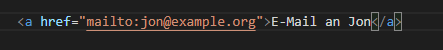Links in einem neuen Fenster öffnen
Wenn der Link die Zielseite in einem neuen Fenster öffnen soll, können Sie im öffnenden <a>-Tag das Attribut target verwenden. Als Wert verwenden Sie _blank.
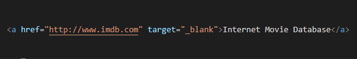Links zu bestimmten Teilen einer Website
Wie sie Links zu bestimmten Teilen einer Website erstellen, erfahren sie auf w3schools/Links.
Tabellen
Grundlegende Tabellenstruktur
| <table> | Tabellen werden mit dem Element <table> erstellt. Die Inhalte der Tabelle werden Zeile für Zeile geschrieben. |
| <tr> | Den Beginn einer Zeile markieren Sie jeweils mit dem öffnenden <tr>-Tag. Darauf folgt jeweils ein <td>-Element für jede Zelle in der Zeile. Am Ende der Zeile geben Sie das schliessende </tr>-Tag an. |
| <td> | Die einzelnen Zellen einer Tabelle werden durch <td>-Elemente dargestellt. |
Tabellenüberschriften
| <th> | Das Element <th> wird ebenso verwendet wie <td>, steht aber für die Überschrift einer Spalte oder Zeile. |
Lange Tabellen
Es gibt drei Elemente, um den Hauptinhalt einer Tabelle von der ersten und der letztenZeile abzusetzen.
| <thead> | Der Kopf der Tabelle steht in einem <thead>-Element |
| <tbody> | Der Rumpf der Tabelle steht in einem <tbody>-Element |
| <tfoot> | Der Fussbereich gehört in das Element <tfoot>. |
CSS
In CSS erstellen Sie Regeln, die festlegen, wie der Inhalt eines Elements dargestellt werden soll. Beispielsweise können Sie verlangen, dass der Hintergrund einer Seite cremefarben angezeigt werden soll, alle Abschnitte in Grau und in der Schriftart Arial und alle Überschriften der ersten Ebene in blauer, kursiver Times-Schrift.
CSS einbinden
| <link> | Mit dem Element <link> in einem HTML-Dokument kann dem Browser mitgeteilt werden, wo sich die CSS-Datei zur Formatierung der Seite befindet. Dies ist ein leeres Element und befindet sich innerhalb des <head>-Elements. Es sollte die folgenden drei Attribute aufweisen: |
| href | Gibt den Pfad zur CSS-Datei an. |
| type | Gibt die Art des verknüpften Dokuments an. Der Wert muss text/css lauten. |
| rel | Gibt die Beiziehung zwischen der HTML-Seite und der verknüpften Datei an. Bei der Verknüpfung zu einer CSS-Datei sollte der Wert stylesheet lauten. |
CSS-Regel
CSS-Regeln werden auf HTML-Elemente angewendet und legen fest, wie der Inhalt dieser Elemente angezeigt werden soll. Eine CSS-Regel besteht aus zwei Teilen: einem Selektor und einer Deklaration.
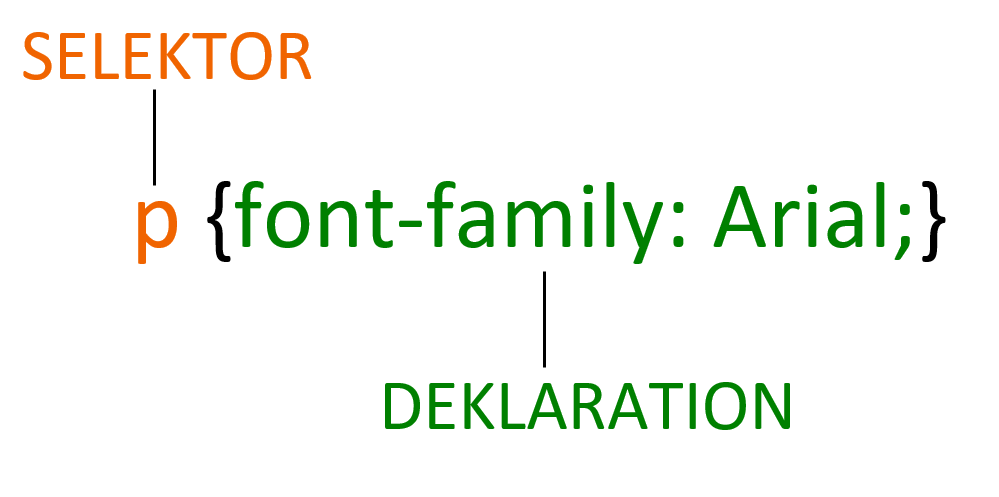Diese Regel besagt, dass alle <p>-Elemente in der Schriftart Arial angezeigt werden sollen.
Selektoren geben an, auf welches Element die Regel angewandt werden soll. Eine Regel kann auch für mehrere Elemente gelten, wenn Sie die einzelnen Elementnamen durch Kommata getrennt angeben.
Deklarationen besagen, wie die im Selektor genannten Elemente formatiert werden sollen. Die Deklarationen bestehen selbst aus zwei Teilen, einer Eigenschaft und einem Wert
Innerhalb der geschweiften Klammern stehen die CSS-Deklarationen, die aus je zwei Teilen bestehen: einer Eigenschaft und einem Wert, getrennt durch einen Doppelpunkt. In einer Deklaration können auch mehrere Eigenschaften angegeben werden, die Sie jeweils durch ein Semikolon trennen müssen.
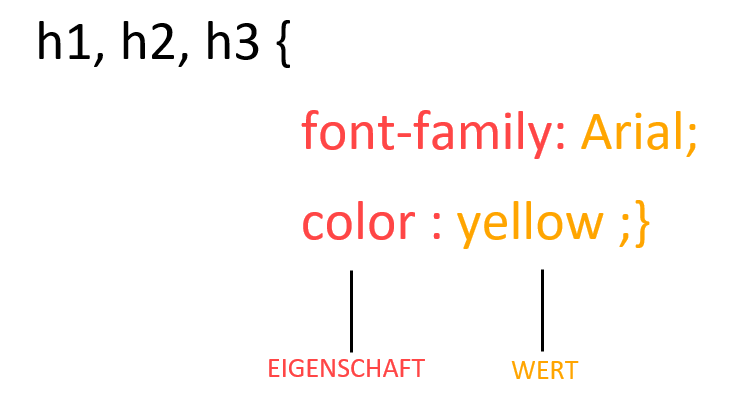Diese Regel besagt, dass alle <h1>-, <h2>- und <h3>-Elemente in der Schriftart Arial und in Gelb angezeigt werden sollen.
Eigenschaften bezeichnen den Aspekt des Elements, den Sie ändern möchten, z.B. Farbe, Schriftart, Breite, Höhe und Rahmen.
Werte nennen die gewünschte Einstellungen für die ausgewählte Eigenschaft. Um beispielsweise eine Farbeigenschaft festzulegen, geben Sie den Wert der Farbe an, in der die betreffenden Elemente angezeigt werden sollen.
Selektoren
| Selektor | Bedeutung | Beispiel |
|---|---|---|
| Universalselektor | Gilt für alle Elemente im Dokument | * { } Gilt für alle Elemente auf der Seite |
| Typselektor | Gilt für übereinstimmende Elementnamen | h1, h2, h3 { } Gilt für alle <h1>-, <h2>- und <h3>- Elemente |
| Klassenselektor | Gilt für Elemente, deren Attribut class einen Wert hat, der mit dem hinter dem Punkt angegebenen Wert übereinstimmt | .note { } Gilt für alle Elemente, deren class-Attribut den Wert note hat p.note { } Gilt nur für <p>-Elemente, deren class-Attribut den Wert note hat |
| ID-Selektor | Gilt für Elemente, deren Attribut id einen Wert hat, der mit dem hinter dem Nummernsymbol angegebenen Wert übereinstimmt | #introduction { } Gilt für Elemente deren id-Attribut den Wert introduction hat |
| Kindselektor | Gilt für Elemente, dem angegebenen Element unmittelbar untergeordnet sind | li>a { } Gilt für alle <a>-Elemente, die Kinder eines <li>-Elements sind (aber nicht für andere <a>-Elemente auf der Seite) |
| Nachkommenselektor | Gilt für Elemente, die dem angegebenen Element untergeordnet sind (nicht nur für direkt untergeordnete Elemente) | p a { } Gilt für alle <a>-Elemente innerhalb eines <p>-Elements, auch wenn andere Elemente dazwischen verschachtelt sind |
| Selektor für benachbarte Geschwister | Gilt für Elemente, die dem angegebenen Element direkt gleichgeordnet sind | h1+p { } Gilt für das erste <p>-Element nach einem <h1>-Element (aber nicht für andere <p>-Elemente) |
| Allgemeiner Geschwisterselektor | Gilt für Elemente, die dem angegebenen Element gleichgeordnet sind, auch wenn sie nicht direkt aufeinander folgen | h1~p { } Wenn Sie zwei <p>-Elemente haben, die Geschwister eines <h1>-Elements sind, gilt diese Regel für beide |
Text
Schriftarten angeben
| font-family | Mit der Eigenschaft font-family können Sie die Schriftarten für den Text innerhalb der Elemente angeben, auf die die CSS-Regel angewendet wird. |
Schriftgrösse
| font-size | Mit der Eigenschaft font-size geben Sie die Grösse der Schrift an. Die Grösse kann in Pixel, Prozent oder em angegeben werden. Ein em entspricht der Breite des Buchstaben m. |
Fettschrift
| font-weight | Mit der Eigenschaft font-weight können Sie Text fetten. Diese Eigenschaft übernimmt gewöhnlich einen der beiden folgenden Werte: |
| normal | Der Text wird in der normalen Stärke dargestellt. |
Kursivschrift
| font-style | Um Kursivschrift zu verlangen, verwenden Sie die Eigenschaft font-style. Sie kann die folgenden drei Werte annehmen: |
| normal | Dadurch erscheint der Text in normaler Lage. |
| italic | Dadurch wird der Text kursiv dargestellt. |
| oblique | Dadurch wird der Text in Schrägschrift dargestellt. |
Gross- & Kleinschreibung
| text-transform | Mit der Eigenschaft text-transform können Sie zwischen Gross- und Kleinbuchstaben umschalten. Dazu dienen folgende Werte: |
| uppercase | Der Text erscheint in Grossbuchstaben. |
| lowercase | Der Text erscheint in Kleinbuchstaben. |
| capitalize | Der Anfangsbuchstabe jedes Wortes wird grossgeschrieben. |
unterstreichen & druchstreichen
| text-decoration | |
| none | Alle auf den Text angewendeten Ausschmückungen werden entfernt. |
| underline | Der Text wird unterstrichen. |
| overline | Es wird eine Linie über dem Text gezogen. |
| line-through | Die Wörter werden durchgestrichen. |
| blink | Der Text wird animiert, sodass er blinkt. |
Ausrichtung
| text-align | Mit text-align legen Sie die Ausrichtung des Textes fest. Diese Eigenschaft kann die folgenden vier Werte annehmen: |
| left | Der Text wird linksbündig ausgerichtet. |
| right | Der Text wird rechtsbündig ausgerichtet. |
| center | Der Text wird zentriert. |
| justify | Jede Zeile eines Absatzes nimmt die gesamte Breite des umgebenden Kastens ein (Blocksatz). |
Fonts (Google)
Auf https://fonts.google.com/ kann man verschiedene Schriftarten in die Webseite einbinden, da ja einige Schriftarten auf den Besucher-PCs nicht installiert sind.
| @font-face | Mit @font-face können Sie auch Schriften verwenden, die auf den Computern der Besucher nicht installiert sind, indem Sie einen Pfad angeben, von dem die Schrift heruntergeladen werden kann. @font-face bindet man im HTML-File ein. |
| <link href=" "> | Mit der Eigenschaft <link gibt es eine weitere Methode, eine Schriftart im HTML einzubinden. |
| @import | Mit @import kann man eine Schriftart von Google Fonts im CSS einbinden die Eigenschaft schreibt man am Besten ganz am Anfang vom Code. |
Farbe
Vordergrundfarbe
| color | Mit der Eigenschaft color bestimmen Sie die Farbe des Textes in einem Element. In CSS können Sie Farben auf drei verschiedene Weisen festlegen: |
| RGB-Werte | Hiermit werden die Farben durch die Angabe der Menge von Rot, Grün und Blau definiert, aus denen sie sich zusammensetzen. |
| HEX-Codes | Diese sechsstelligen Codes mit vorangestelltem Nummernzeichen geben ebenfalls den Ateil von Rot, Grün und Blau einer Farbe an. |
| Farbnamen | Es gibt 147 vordefinierte Farbnamen, die von Browsern erkannt werden, beispielsweise yellow. |
Hintergrundfarben
| background-color | CSS behandelt alle HTML-Elemente so, als ob sie in einem Kasten stünden. Mit der Eigenschaft background-color legen Sie die Hintergrundfarbe dieses Kasten fest. |
Listen, Tabellen & Formulare
Aufzählungspunkte gestalten
| list-style-type | Mit der Eigenschaft list-style-type bestimmen Sie die Form oder Gestalt von Aufzählungspunkten. |
| Ungeordnete Listen | |
Für ungeordnete Listen sind folgende Werte verfügbar:
| none disc circle square |
Für geordnete (nummerierte) Listen können Sie folgende Werte verwenden:
| decimal decimal-leading-zero lower-alpha upper-alpha lower-roman upper-roman |
Tabelleneigenschaften
Sie haben bereits einige Eigenschaften kennengelernt, die gewöhnlich für Tabellen eingesetzt werden. hier fasse ich die folgenden Eigenschaften zusammen:
| width | Legt die Breite der Tabelle fest. |
| padding | Legt den Abstand zwischen dem Rahmen der einzelnen Tabellenzellen und ihrem Inhalt fest. |
| letter-spacing, font-size | Sorgen für eine zusätzliche Formatierung des Inhalts von Tabellenkopfzeilen. |
| border-top, border-bottom | Legen die Rahmen über und unter den Tabellenkopfzeilen fest. |
| text-align | Richtet den Text in einigen Tabellenzellen aus. |
| background-color | Ändert abwechselnd die Hintergrundfarbe der Tabellenzeilen. |
| :hover | Hebt eine Tabellenzeile hervor, wenn der Benutzer mit dem Mauszeiger darüber fährt. |
Cursorformen
| cursor | Mit der Eigenschaft cursor können Sie den Typ des Mauszeigers steuern, den die Benutzer sehen. |
Am häufigsten werden für diese Eigenschaft die folgenden Werte verwendet:
| auto crosshair default pointer move text wait help url("cursor.gif"); |
Bilder
Hintergrundbilder
| background-image | Mit der Eigenschaft background-image können Sie ein Bild hinter ein HTML-Element legen - hinter die gesamte Seite oder nur hinter einen Teil davon. Standardmässig wird das Hintergrundbild wiederholt angezeigt, um den gesamten Kasten auszufüllen. |
Bilder wiederholen
| background-repeat | Die Eigenschaft background-repeat kann folgende vier Werte annehmen: |
| repeat | Das Hintergrundbild wird in horizontaler und in vertikaler Richtung wiederholt angezeigt. |
| repeat-x | Das Bild wird nur horizontal wiederholt. |
| repeat-y | Das Bild wird nur vertikal wiederholt |
| no-repeat | Das Bild wird nur einmal angezeigt. |
| background-attachment | Die Eigenschaft background-attachment gibt an, ob das Hintergrundbild beim Scrollen in seiner Position verbleiben oder mitwandern soll. Sie kann folgende zwei Werte annehmen: |
| fixed | Das Hintergrundbild behält seinen Platz auf der Seite bei. |
| scroll | Das Hintergrundbild bewegt sich beim Scrollen nach oben bzw. unten. |
Box Model
Abmessungen von Boxen
| width, height | Standardmässig ist eine Box gerade gross genug für sienen Inhalt. Mit den Eigenschaften height und width können Sie die Abmessungen jedoch selbst festlegen. |
Die Breite einschränken
| min-width, max-width | Manche Seiten sind so gestaltet, dass sie ihre Grösse an die des Benutzerbildschirms anpassen. Dabei wird mit der Eigenschaft min-width die Mindesbreite angegeben und mit max-width die Höchstbreite. |
Rahmenbreite
| border-width | Mit der Eigenschaft border-width regeln Sie die Breite eines Rahmens. Der Betrag kann entweder in Pixeln oder mit dem Wert thin, medium oder thick angegeben werden. Prozentwerte sind bei dieser Eigenschaft nicht möglich |
Rahmenart
| border-style | Die Art des Rahmens können Sie mit border-style festlegen. Diese Eigenschaft kann die folgenden Werte annehmen: |
| solid | Eine einfache, durchgezogene Linie. |
| dotted | Eine Reihe von quadratischen Punkten. |
| dashed | Eine gestrichelte Linie. |
| double | Zwei druchgezogene Linien. |
| groove | Der Rahmen erscheint wie in die Seite eingeschnitten. |
| ridge | Der Rahmen scheint aus der Seite hervorzuragen. |
| inset | Die Box scheint in die Seite hineinzusinken. |
| outset | Die Box scheint aus der Seite herauszutreten. |
| hidden/none | Es wird kein Rahmen angezeigt. |
Rahmenfarbe
| border-color | Die Farbe von Rahmen können Sie mit RGB-Werten, Hex-Codes und CSS-Farbnamen angeben. |
Innenrand
| padding | Mit der Eigenschaft padding geben Sie den Abstand zwischen dem Inhalt eines Elements und seinem Rahmen an. |
Aussenrand
| margin | Mit der Eigenschaft margin regeln Sie den Abstand zwischen den Kästen. Der Wert wird gewöhnlich in Pixeln angegeben, wobei jedoch auch Prozent- und em-Werte möglich sind. |
Inline- & Blockelemente umwandeln
| display | Mit der Eigenschaft display können Sie Inline- in Block-Elemente umwandeln und umgekehrt. Ausserdem ist es damit möglich, Elemente auf der Seite auszublenden. Diese Eigenschaft kann folgende Werte annehmen: |
| inline | Sorgt dafür, dass sich ein Block-Element wie ein Inline-Element verhält. |
| block | Sorgt dafür, dass sich ein Inline-Element wie ein Block-Element |
| inline-block | Sorgt dafür, dass ein Block-Element die Flusseigenschaften eines Inline-Elements annimmt, aber alle anderen Aspekte eines Block-Elements beibehält. |
| none | Blendet das Element von der Seite aus. Das Element verhält sich also so, als sei es gar nicht auf der Seite vorhanden. |
Boxen verbergen
| visibility | Mit der Eigenschaft visibility können Sie Boxen vor den Benutzern verbergen. Dabei bleibt jedoch ein leerer Platz an der Stelle zurück, an der das Element sonst angezeigt würde. Diese Eigenschaft kann die beiden folgenden Werte annehmen. |
| hidden | Verbirgt das Element. |
| visible | Zeigt das Element an. |
Flexbox
Mit Flexboxen kann man das Problem der Ausrichtung eines Elements lösen. Eine sehr gute Erklärung mit Übungen findet man auf css-tricks.com
Meida Queries
Mit Media Queries versucht man seine Webseite "responsive" zu machen. Das bedeutet, die Webseite soll auf jedem Gerät mit jeder Bildschirmauflösung ansprechend aussehen. Wie das funktioniert, wird auf w3schools sehr gut erklärt.
Praxis
Bevor man überhaupt daran denkt ein HTML-File zu erstellen, muss man die Seite vorbereiten. Die folgenden zwei Kapitel machen dabei den Anfang.
Wireframe
Ein Wireframe ist eine einfache Skizze der wichtigsten Informationen, die auf die einzelnen Seiten einer Website gehören. Sie zeigt die Hierarchie der Informationen und den dafür benötigten Platz.
Viele Designer beginnen damit, Wireframes mit den Elementen zu erstellen, die auf den einzelnen Seiten erscheinen müssen. Dazu skizzieren sie die Bereiche der Seite, auf denen Die Elemente stehen sollen. Auf gomockingbird.com kann man ganz einfach ein Wirefram erstellen.
Sitemap
Nachdem man sich Gedanken darüber gemacht hat, was Sie auf Ihrer Seite zeigen müssen, sollten Sie diese Informationen in Abschnitte oder Seiten gliedern. Dabei erstellen Sie ein Schaubild der Seiten, um die Struktur der Website darzustellen. Dieses Diagramm wird als Sitemap bezeichnet und zeigt die Gruppierung der Seiten.
Um zu entscheiden, welche Informationen auf welche Seite kommen sollen, können Sie mit Karteikarten arbeiten. Auf gloomaps.com ist es sehr simpel eine Sitemap zu erstellen.
Layout in HTML
Herkömmliche HTML-Layouts
Lange gruppierten Webautoren zusammengehörige Bestandteile einer Seite (z.B. die Teile, die den Kopfbereich, einen Artikel, den Fussbereich oder eine Marginalspalte bilden) in <div>-Elementen. Um anzugeben, welche Rolle diese <div>-Bereiche in der Struktur der Seite spielen, wurden die Attribute class und id verwendet.
Neue Layoutelemente in HTML5
In HTMLt wurden neue Elemente eingeführt, um eine Seite in verschieden Abschnitte aufzuteilen. Die Namen dieser Elemente geben an, was für Inhalte sich jeweils darin befinden. Dabei kann es immernoch Änderungen geben, was Webautoren jedoch nicht daran hindert, sie jetzt schon zu verwenden.
Kopf- & Fussbereiche
| <header> <footer> | Die Elemente <header> und <footer> können für Folgendes verwendet werden: |
| Die Kopf- und Fussbereiche am oberen und unteren Rand jeder Seite einer
Website. Kopf- und Fussbereiche für einzelne <article>- oder <section>-Elemente auf einer Seite. |
Navigation
| <nav> | Das Element <nav> enthält die Hauptnavigationsabschnitte der Website. |
Gliederung
| <div> | Wenn es in einem Fall kein geeignetes Element zur Gruppierung gibt, verwenden Sie nach wie vor <div>. |
Validierung
Bevor man eine Seite veröffentlicht, muss sie valide sein. Das heisst, sie muss gewissen Regeln entsprechen, die von W3C (World Wide Web Consortium) aufgestellt wurden. Eine gute Validerungsseite ist validator.w3.org.
Testprotokoll
Es gibt verschiedene Möglichkeiten eine Seite zu testen. Egal welche Methode man benutzt, man braucht immer ein Testprotokoll dazu. Folgende Dinge müssen auf jedem Testprotokoll ersichtlich sein:
Tester, Datum, Name des Testfalls, Testfallbeschreibung, Testschritte, Testergebnis und gegebenenfalls Änderungen nach dem Testen.